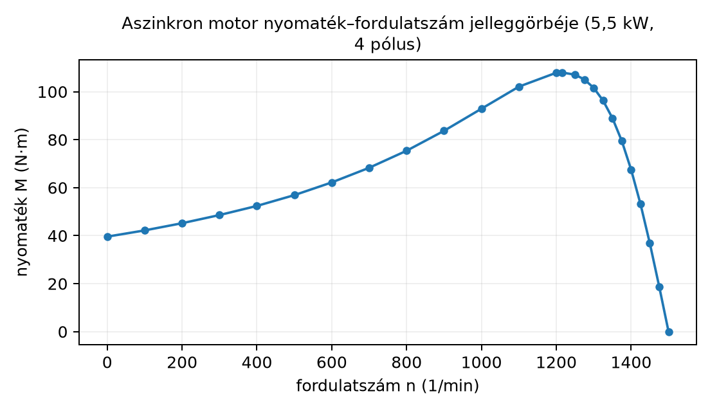

Statikus változat (mint a PDF-ben)
A műhelyben egy régi motor adattáblája akár lekopott, akár poros, de ha érted, mit jelent a rajta lévő 1450 1/min, a cosφ 0,81 vagy a Δ/Y 230/400 V jelölés, azonnal tudni fogod, hogy a motor megfelel-e a hajtásnak, csillag–delta indítást tudsz-e választani, és miért nem szabad a névleges nyomaték többszörösét tartósan kérni tőle. Az adattábla nem „papír”, hanem a gép villamos és mechanikai személyazonossága: a hibakeresés és a kiválasztás is innen indul. Ebben az alfejezetben a legfontosabb „híd” mennyiséget, a szlipet, és a hozzá kapcsolódó nyomaték–fordulatszám jelleggörbét tanulod meg úgy, hogy számolni és a gyakorlatban ellenőrizni is tudd.
Példa. Egy 5,5 kW-os, 4 pólusú, 50 Hz-es aszinkron motor adattábláján ez áll:
| Mennyiség | Érték |
|---|---|
| Névleges teljesítmény | 5,5 kW |
| Névleges feszültség | Δ 400 V / Y 690 V |
| Névleges áram | 11,5 A (400 V, Δ) |
| Névleges fordulatszám | 1450 1/min |
| Teljesítménytényező | cosφ = 0,81 |
| Hatásfok / osztály | ≈ 85 % / IE1 (régebbi motor; szemléltető érték) |
| Üzemmód | S1 |
| Védettség | IP 55 |
| Szigetelési osztály | F |
A 4 pólusú motor szinkron fordulatszáma 50 Hz-en 1500 1/min, a névleges fordulatszáma pedig 1450 1/min. A kettő különbsége éppen a csúszás (szlip), amely a motor terheléséről és a forgórész veszteségeiről sokat elárul.
Definíció. A szlip (csúszás) azt adja meg, hogy a forgó mágneses mező fordulatszámához képest a forgórész mennyivel marad le, viszonyítva a szinkron fordulatszámhoz:
ahol
a szlip (nincs mértékegysége, gyakran %-ban adják meg),
a szinkron fordulatszám (1/min),
a tényleges fordulatszám (1/min).
A szinkron fordulatszámot már a Szerkezet és működési elv, forgó mágneses mező alfejezetből ismered:
ahol a hálózati frekvencia (Magyarországon 50 Hz), pedig a póluspárszám. Figyelj: ha egy motort „4 pólusúnak” neveznek, akkor a pólusszám 4, a póluspárszám 2, tehát ; a .
Szabály. A szlip értéke névleges terhelésnél kis motoroknál jellemzően 3–8 % közötti, nagyobb gépeknél 1–3 % is lehet. Pontos értéke a motor tervezésétől függ, és mindig a gyártói adattábla szerint veendő figyelembe (ellenőrizendő: konkrét motor adattáblája).
A forgó mágneses mező és a forgórész közötti relatív fordulatszám . Mivel a rotorban indukált feszültség frekvenciája arányos ezzel a relatív mozgással, a rotoráram frekvenciája:
Például ha és , akkor . Ez azt jelenti, hogy a rotoráram frekvenciája névleges terhelésnél csak néhány hertz, tehát lassan változik; ezért nem kell a rotorkörben nagyfrekvenciás jelenségektől tartani. (Az aszinkron gépet azért nevezik indukciós gépnek, mert a forgórész áramát a forgó mező indukálja, a forgórész nem kap külső táplálást.)
Összefüggés. A motor tengelyén leadott teljesítmény és a nyomaték kapcsolata:
ahol a mechanikai teljesítmény (W), a nyomaték (N·m), a szögsebesség (rad/s). Ha a fordulatszámot -ben (1/min) és a teljesítményt kW-ban adjuk meg, a gyakorlatban használt alak:
ahol kW-ban, 1/min-ben, N·m-ben adódik. A 9550-es szorzó a mértékegység-átváltásból származik: , egyszerűsítve 9550.
Számítás. Mennyi a névleges nyomatéka az 5,5 kW-os, 1450 1/min-es motornak?
Adott: , . Keresett: .
Ellenőrzésképp: a teljesítmény , ahol . , tehát a számítás helyes.
Az aszinkron motor nyomatéka nem állandó: erősen függ a fordulatszámtól, azaz a szliptől. A gyártói katalógusokban gyakran ábrázolják a nyomaték–fordulatszám jelleggörbét ( görbét). A görbe alakját a következő egyszerűsített, ún. Kloss-féle összefüggés jól leírja:
ahol a billenőnyomaték (a maximális nyomaték), pedig a billenőszlip (az a szlip, amelynél a billenőnyomaték fellép). Ez az összefüggés a névleges tartományban és a billenőpont környékén jól közelíti a görbét, de nagy szlipeknél (az indítás közelében) és a féküzemben már csak durva közelítésnek tekintendő: a kalickás forgórész indításkor megnövekvő ellenállását nem veszi figyelembe, ezért a valós indítónyomatéknál általában kisebbet ad.
A görbe fontos pontjai:
Üzemtartományok a fordulatszám szerint:
Összefüggés. A hálózati feszültség csökkenése nagyon erősen hat a nyomatékra: a billenőnyomaték közelítőleg a feszültség négyzetével arányos:
Ha például a kapocsokon a 400 V helyett csak 360 V jelenik meg (10 % esés), a billenőnyomaték kb. -szeresére, tehát 19 %-kal csökken. Ezért az alulfeszültség miatt a motor könnyen lefulladhat, miközben az áramfelvétele megnő.
Az alábbi ábra a 5,5 kW-os, 4 pólusú motor szemléltető nyomaték–fordulatszám görbéjét mutatja.

A görbe a Kloss-képletből számolt: N·m, (a billenőpont 1/min-nél van), és ezekkel a paraméterekkel a 36,2 N·m-es névleges terheléshez éppen kb. 1450 1/min tartozik. A billenőnyomaték tehát közel háromszorosa a névlegesnek. A névleges munkapont a szinkron fordulatszám közelében, a görbe meredek, stabil szakaszán van. Az indítónyomatékra () a képlet csak kb. 40 N·m-t () ad; a valós kalickás motor indítónyomatéka a katalógusok szerint ennél nagyobb: kis és közepes motoroknál gyakran – (a fenti –-szeres tartomány felső része; ellenőrizendő: gyártói adatlap), mert a Kloss-képlet az indítás közelében csak közelítő.
A HTML-kiadásban az alábbi ábra interaktív: a billenőnyomaték, a billenőszlip és a terhelő nyomaték csúszkával állítható, a görbe és az üzemi pont azonnal frissül.
A statikus tartalék ábrán ugyanaz a görbe látható, mint a fenti charton ( N·m, ): feltüntetve a Kloss-képletből adódó indítónyomatékot (≈ 40 N·m), a billenőpontot (1215 1/min), a 36,2 N·m-es üzemi pontot (≈ 1450 1/min), valamint összehasonlításul egy élesebb () és egy 10 %-kal kisebb feszültséghez tartozó görbét. Az interaktív változatban próbáld ki: ha a billenőszlipet 0,05-re csökkented, a görbe élesebbé válik, a billenőnyomaték közelebb kerül a szinkron fordulatszámhoz.
A motor az adattáblázott névleges tengelyteljesítményt () nem 100 % hatásfokkal állítja elő. A hálózatból felvett hatásos villamos teljesítmény háromfázisú, szimmetrikus hálózat esetén:
ahol a vonali feszültség (400 V), a vonali áram, a teljesítménytényező. A hatásfok:
A felvett teljesítmény egy része rézveszteségre (állórész és forgórész ellenállása), vasveszteségre és súrlódásra megy el, ezért a hatásfok mindig kisebb 1-nél. Az aszinkron motor hatásfoka névleges terhelésnél jellemzően 80–95 %, a teljesítménytényező pedig gyakran 0,75–0,90 közötti.
Számítás. Mennyi az 5,5 kW-os, 400 V-os, 11,5 A-es, cosφ = 0,81-es motor felvett teljesítménye és hatásfoka?
Adott: , , , . Keresett: és .
Ellenőrzés: a felvett és leadott teljesítmény különbsége veszteség, ami a felvett teljesítmény 14,7 %-a, és ez összhangban van a kb. 85 %-os hatásfokkal.
Definíció. Az adattábla a villamos gépen elhelyezett, a gyártó által megadott tábla, amely a gép azonosításához és biztonságos üzemeltetéséhez szükséges névleges adatokat és jelöléseket tartalmazza.
Szabvány. A villamos gépek adattáblájára és üzemmódjaira vonatkozó általános követelményeket az MSZ EN 60034-1 (villamos gépek – 1. rész: névleges adatok és üzemmódok) szabályozza. A védettségi fokozat az MSZ EN 60529 (IP-kód), a szigetelési osztály az IEC 60085/MSZ EN 60034-1 köre szerint értendő. A konkrét értékeket mindig a gyártói adattábla és kezelési utasítás rögzíti (ellenőrizendő: aktuális szabványkiadás és gyártói dokumentáció).
A leggyakoribb adattábla-mezők:
Példa. A fenti adattábla szerint a Δ 400 V / Y 690 V jelentése: a motor tekercseit deltakapcsolásban 400 V-os, csillagkapcsolásban 690 V-os hálózatra köthetjük. Ha a hálózat 400 V, akkor a tekercsek deltakapcsolása a helyes; csillagba kötve a tekercsekre csak jutna, és a motor lényegesen kisebb nyomatékkal, tartósan nem terhelhetően járna. Ezt a gondolatot a Kapocsdoboz, csillag–delta bekötés és forgásirány alfejezet használja tovább.
Továbbvitt eredmény. Az adattáblán szereplő kapcsolási feszültség (Δ/Y) és a névleges fordulatszám, áram, cosφ értékek nélkülözhetetlenek a Kapocsdoboz, csillag–delta bekötés és forgásirány alfejezetben, ahol a tényleges bekötést tanulod meg, valamint a Diagnosztika: szemrevételezés, mérések, hibajegyzőkönyv alfejezet hibakeresési lépéseihez, mert a mért fordulatszámból számolt szlip és a névleges adatok összevetése utal a túlterhelésre, alulfeszültségre vagy mechanikai hibára.
Számítás. A festőüzem egyik motorjának adattáblája:
Vizsgáljuk meg, hogy a motor megfelel-e a szivattyúnak, ha a szivattyú névleges fordulatszáma 1460 1/min, és a tengelyen 7,5 kW-ot igényel.
Először a szinkron fordulatszám: a fordulatszám 1460 1/min közel van 1500-hoz, tehát 4 pólusú motor (), . A szlip:
Ez normális, a motor a névleges pontján üzemelhet. A névleges nyomaték:
A felvett hatásos teljesítmény:
A hatásfok:
A motor adattáblája tehát megfelel a szivattyúnak, ha a szivattyú nyomatékigénye a névleges értékhez közel van. Amennyiben a szivattyú 8,2 kW-ot venne fel, a motor túlterhelten, magasabb szlippel járna, és előbb-utóbb a hőkioldó leoldaná.
Egy ipari darabológép hajtását 5,5 kW-os motorral cserélték. A szerelő bekötötte, de a motor néhány perc után rendszeresen leoldott. A feszültség mérésénél kiderült, hogy a csatlakozási ponton a névleges 400 V helyett 352 V volt (12 %-os feszültségesés a hosszú tápkábel miatt). A motor billenőnyomatéka -szeresére esett, és a gép nyomatékigénye meghaladta a csökkent billenőnyomatékot, ezért a motor „lefulladt”, miközben az áram a névleges többszörösére nőtt. A megoldás a vezeték keresztmetszetének növelése volt. A tanulság: a jelleggörbe és az adattábla csak névleges feszültség mellett érvényes.
1. feladat (A). Egy 2 pólusú, 50 Hz-es aszinkron motor névleges fordulatszáma 2860 1/min. Mekkora a szlip?
2. feladat (A). Egy 3 kW-os, 1420 1/min-es motor névleges nyomatékát kérdés. Mennyi a nyomaték N·m-ben?
3. feladat (B). Egy 400 V-os, 8,4 A-es, cosφ = 0,82-es, 4 kW-os, 1420 1/min-es motor adatai alapján számítsd ki: a felvett hatásos teljesítményt, a hatásfokot és a szlipet.
4. feladat (B). Egy 6 pólusú, 50 Hz-es motor névleges szlipje 3 %. Mennyi a szinkron és a névleges fordulatszám? Mekkora a rotoráram frekvenciája?
5. feladat (C). Egy mérés során a motor tengelyén 14 N·m nyomatékot mérünk 2870 1/min fordulatszámon. Mekkora a leadott mechanikai teljesítmény? Adott a motor hálózati teljesítményfelvétele 5,4 kW. Mekkora a hatásfok ebben a munkapontban? (Ellenőrizd: lehet-e a hatásfok 1-nél nagyobb? Mit jelentene, ha a mért leadott teljesítmény nagyobb lenne a felvettnél?)
6. feladat (D). Egy üzemi elosztóban egy csillag-delta indítású motor diagnosztikáját végzed. A motor adattáblája: 4 kW, Δ 400 V / Y 690 V, 1430 1/min, cosφ = 0,80, IP 54, S1, F. A mért fordulatszám terhelés alatt 1380 1/min, a vonali feszültség 398 V. A szlip növekedéséből következtess: mi lehet a hiba? Milyen mérést végeznél?
Önellenőrzés – válaszok
1. feladat megoldása.
2 pólus = 1 póluspár,
.
2. feladat megoldása.
3. feladat megoldása.
Felvett teljesítmény:
Hatásfok:
(a 80–95 %-os tipikus tartományban).
Szinkron fordulatszám: 4 pólusnál
;
szlip:
4. feladat megoldása.
6 pólus = 3 póluspár,
.
Névleges fordulatszám:
,
tehát
.
Rotorfrekvencia:
5. feladat megoldása.
A mechanikai teljesítmény:
,
ahol
.
A hatásfok:
(kisebb, mint 1, tehát reális).
Ellenőrzés: a felvett teljesítmény (5,4 kW) nagyobb a leadottnál (4,2
kW); a különbség (kb. 1,2 kW) veszteség. Ha a mérés fordított eredményt
adna (a leadott nagyobb a felvettnél,
),
az mérési hibára utalna.
6. feladat megoldása.
A névleges szlip:
,
,
A mért szlip:
A szlip a névleges közel kétszeresére nőtt, ami nagyobb nyomatékigényt
vagy túlterhelést jelezhet. A vonali feszültség 398 V, tehát a
feszültségesés nem jelentős. Mivel a motor csillag-delta indítású, Y-Δ
indításnál először azt ellenőrizd, hogy az átkapcsolás megtörténik-e: ha
a motor csillagban marad, a tekercsekre csak kb. 230 V jut, a nyomaték
kb. harmadára esik, és terhelés alatt nagy a szlip. Ellenőrizd az
időrelé beállítását, a deltakontaktor (K3) behúzását és
segédérintkezőit, majd lakatfogóval a fázisáramokat (csillagban maradt
motornál az áram terhelés alatt a névleges körül vagy fölötte van, a
motor melegszik). Ha a váltás rendben van, a tekercsfeszültség
csökkenése is szóba jöhet. Érdemes megmérni az egyes fázisáramokat
lakatfogóval; ha az áram meghaladja a névlegest, a hajtás túlterhelt,
vagy mechanikai hiba (pl. csapágy, szoruló tengely) áll fenn. A
szlipnövekedés a terhelés vagy a motor belső hibájának irányába
mutat.
Az aszinkron motor a forgó mágneses mező fordulatszámánál kisebb fordulatszámmal forog. A szlip azt fejezi ki, mekkora ez a lemaradás. A szinkron fordulatszám ; a rotoráram frekvenciája . A nyomaték a teljesítményből és a fordulatszámból számítható: (P kW-ban, n 1/min-ben, M N·m-ben). A nyomaték–fordulatszám jelleggörbén megkülönböztetjük az indítónyomatékot, billenőnyomatékot és a névleges üzemi pontot. A billenőnyomaték a feszültség négyzetével arányos, ezért az alulfeszültség kritikus. A görbe három tartománya: motorüzem (), generátorüzem () és féküzem (). A motor adattáblája tartalmazza a névleges teljesítményt, feszültséget, áramot, fordulatszámot, cosφ-t, üzemmódot (pl. S1), IP-védettséget és szigetelési osztályt. Ezeket az adatokat a Kapocsdoboz, csillag–delta bekötés és forgásirány és a Diagnosztika: szemrevételezés, mérések, hibajegyzőkönyv alfejezetek használják tovább. Az adattábla mindig a gyártó hivatalos dokumentuma, ezért névleges adatként elsődleges forrás.